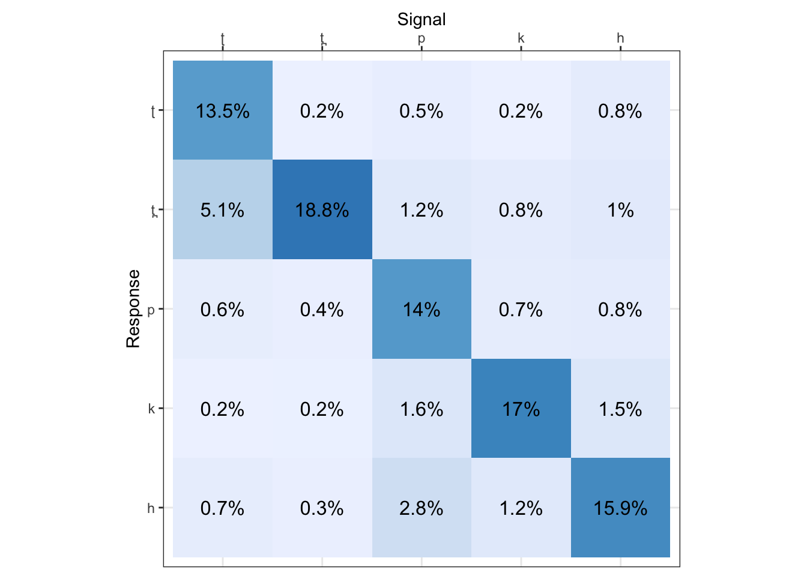
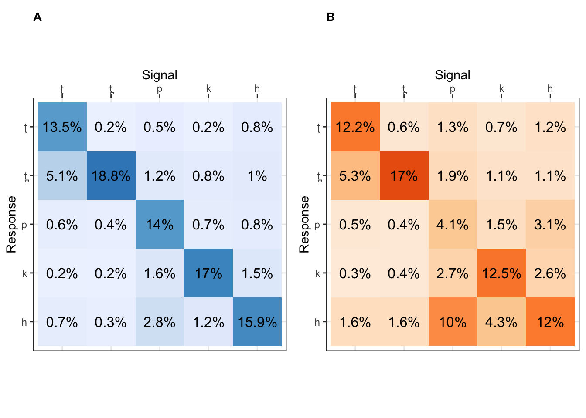

installed.packages("cvms")## Package LibPath Version Priority Depends Imports LinkingTo Suggests
## Enhances License License_is_FOSS License_restricts_use OS_type Archs
## MD5sum NeedsCompilation Builtlibrary(cvms)
library(ggplot2)
library(dplyr)
setwd("/Users/chandannarayan/GitHub/POAsalience/")
data <- read.csv("data_ID_4-02.csv", header=TRUE)
data_clean <- subset(data, display == "Trials-Clean")
data_noise <- subset(data, display == "Trials-Noise")
# How many participants
num_unique_participants <- data_clean %>%
distinct(Participant.Private.ID) %>%
nrow()
num_unique_participants## [1] 20conf_mat_clean <- confusion_matrix(targets = data_clean$cons, predictions = data_clean$Response)
clean <- plot_confusion_matrix(conf_mat_clean$`Confusion Matrix`[[1]], add_counts = FALSE, add_row_percentages = FALSE, add_col_percentages = FALSE) + ggplot2::labs(x = "Signal", y = "Response")
print(clean, show_percents ="main")
conf_mat_noise <- confusion_matrix(targets = data_noise$cons, predictions = data_noise$Response)
plot_confusion_matrix(conf_mat_noise$`Confusion Matrix`[[1]], add_counts = FALSE, add_row_percentages = FALSE, add_col_percentages = FALSE, palette = "Oranges") + ggplot2::labs(x = "Signal", y = "Response")
Note that the echo = FALSE parameter was added to the
code chunk to prevent printing of the R code that generated the
plot.
data_amp <- read.csv("data_amp_ID_3-31.csv", header=TRUE)
data_clean_amp <- subset(data_amp, display == "Trials-Clean")
data_noise_amp <- subset(data_amp, display == "Trials-Noise")
# How many participants
num_unique_participants <- data_clean_amp %>%
distinct(Participant.Private.ID) %>%
nrow()
num_unique_participants## [1] 3conf_mat_clean_amp <- confusion_matrix(targets = data_clean_amp$cons, predictions = data_clean_amp$Response)
clean_amp <- plot_confusion_matrix(conf_mat_clean_amp$`Confusion Matrix`[[1]], add_counts = FALSE, add_row_percentages = FALSE, add_col_percentages = FALSE) + ggplot2::labs(x = "Signal", y = "Response")
print(clean_amp, show_percents ="main")conf_mat_noise_amp <- confusion_matrix(targets = data_noise_amp$cons, predictions = data_noise_amp$Response)
plot_confusion_matrix(conf_mat_noise_amp$`Confusion Matrix`[[1]], add_counts = FALSE, add_row_percentages = FALSE, add_col_percentages = FALSE, palette = "Oranges") + ggplot2::labs(x = "Signal", y = "Response")